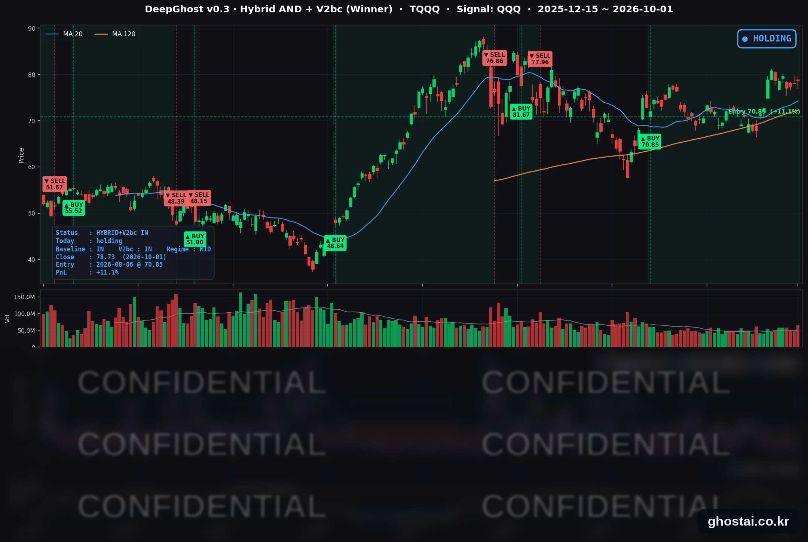

10년물 금리 장중 24년 만의 고점 뒤 하락
· Ghost.AI 데일리 리포트
👻 매일 시그널과 히스토리를 홈페이지에서 한눈에 → www.ghostai.co.kr
회원 페이지 안내 — 회원 가입하시면 커버리지 전 종목의 원본 시그널과 분석 레포트를 매일 확인하실 수 있습니다. 회원 페이지는 블로그·유튜브보다 먼저 업데이트됩니다. 선착순 100명을 모집하고 있으며, 이메일과 필명만으로 가입하실 수 있고 서비스 사용료는 받지 않습니다. 가입 신청 후 운영자 승인을 거쳐 이용하실 수 있습니다.
10월 첫 거래일, 미국 10년물 국채금리가 장중 5.342%까지 올라 2002년 4월 이후 가장 높은 수준을 기록한 뒤 5.237%로 내려 마감했습니다. 9월 22일부터 7거래일 연속 오르던 장기 금리가 하락으로 돌아서자 오전에 밀렸던 주식도 올라 S&P 500은 0.19% 상승했습니다. 지수 상승 폭은 작았지만 S&P 500 구성종목의 59.1%가 올라 전일(22.9%)보다 오른 종목이 크게 늘었습니다. 대형 플랫폼 기술주는 대부분 내렸고, 나스닥100(QQQ)은 반도체 강세에 힘입어 0.31% 올랐습니다.
📊 오늘의 매매 신호
| 항목 | 내용 |
|---|---|
| 오늘 할 일 | ✅ 아무것도 안 해도 됩니다 |
| 포지션 상태 | 📈 TQQQ 보유 중 (IN POSITION) |
| 매수 진입일 | 2026-08-06 (40거래일째) |
| 진입가 → 현재가 | $70.85 → $78.73 |
| 현재 포지션 수익 | +11.12% |
TQQQ 시그널 — IN POSITION
현재 상태: 매수 포지션 유지 중 | 이번 포지션 수익 +11.12%

나스닥100(QQQ)이 +0.31% 오르면서 TQQQ는 +0.90% 오른 78.73달러로 마감했습니다. 1.09% 높게 출발한 뒤 정규장에서는 0.19% 내렸습니다. 전략의 평가수익률은 전 거래일 +10.13%에서 +11.12%로 늘었습니다. 전략은 보유를 유지했고, 모델 기준으로 매도 신호까지의 여유는 전일과 비슷합니다.
10년물 금리가 장중 24년 만의 고점까지 오른 날에도 QQQ는 오전 하락분을 만회하고 상승 마감했습니다. 모델은 금리 수준이 아니라 나스닥100의 가격 움직임을 기준으로 판단합니다. 8월 6일 진입 이후 10년물은 약 57bp(4.670% → 5.237%) 올랐지만, QQQ는 사상 최고 종가(9월 22일, 747.46달러)보다 0.73% 낮은 수준에 있습니다. 10월 2일 발표되는 9월 고용보고서가 금리와 나스닥100을 크게 움직이는지가 다음 확인 포인트입니다.
오늘 미국 시장 — 시황 요약
지수 마감
| 지수 | 종가 | 등락률 |
|---|---|---|
| S&P 500 | 7,666.45 | +0.19% |
| 나스닥 종합 | 26,871.60 | +0.04% |
| 다우존스 | 50,926.56 | +0.04% |
| IWM (러셀 2000 ETF) | 279.06 | +0.42% |
| QQQ (나스닥100) | 742.03 | +0.31% |
| TQQQ | 78.73 | +0.90% |
주식은 오전에 국채 금리 상승과 함께 전일 종가 아래로 밀렸다가, 금리가 늦은 오전부터 내리기 시작하면서 올라 마감했습니다. S&P 500 구성종목 중 오른 종목은 59.1%로 전일(22.9%)보다 크게 늘었고, 구성종목 등락률 중간값(+0.30%)이 지수(+0.19%)보다 높았습니다. 소형주 ETF(IWM)도 0.42% 올라 전일과 달리 중소형·비기술주가 더 강했습니다.
반면 빅테크 플랫폼 7종목 중 6종목은 내렸습니다. QQQ는 반도체(17종목 중 13종목 상승)가 오르면서 나스닥 종합보다 높게 마감했습니다. S&P 500은 사상 최고 종가(8월 13일) 대비 -1.70%, 나스닥 종합은 사상 최고 종가(9월 22일) 대비 -1.37%입니다.
국채 금리 동향
| 만기 | 수익률 | 전 거래일 대비 | 장중 고점 |
|---|---|---|---|
| 3개월 | 3.982% | -4.8bp | 4.015% |
| 5년 | 5.005% | -8.4bp | 5.116% |
| 10년 | 5.237% | -5.6bp | 5.342% |
| 30년 | 5.603% | -3.5bp | 5.691% |
장중 고점은 24년 만의 수준이었지만, 종가는 전 만기가 내렸습니다. 10년물 장중 5.342%는 2002년 4월 이후, 30년물 장중 5.691%는 2002년 5월 이후 가장 높습니다. 오전에는 ISM 제조업 가격지수가 77.9로 6.8포인트 오르고 유가가 오르면서 금리가 올랐습니다. 늦은 오전부터 방향을 바꿔 10년물은 5.6bp 내린 5.237%로 마감했고(9월 17일 이후 가장 큰 하락), 9월 22일부터 이어진 10년물·30년물의 7거래일 연속 상승이 끝났습니다.
단기물이 더 많이 내렸습니다. 재무부 공시 기준 2년물은 4.88%에서 4.78%로 10bp 내려 5월 26일 이후 가장 크게 하락했고, 5년물도 8.4bp 내렸습니다. 2년물 하락은 10월 금리 인상 가능성을 덜 반영한 움직임으로 해석됐습니다. 2년물과 10년물의 차이는 41bp에서 46bp로 벌어져 커브가 가팔라졌고, 10년물과 3개월물의 차이는 125.5bp로 역전은 없습니다.
연준 발언 & 금리 패스
- 제퍼슨(Jefferson) 부의장 (버지니아대 연설, 미 동부시간 13:30): "물가가 너무 오랫동안 너무 높았다"고 했고, 9월 25bp 인상은 적절한 정책이었다고 평가했습니다. 향후 정책은 "데이터의 추세, 변하는 전망, 위험의 균형을 신중히 검토해 결정해야 한다"며 추가 인상을 약속하지는 않았습니다. 에너지 가격 상승이 물가 전반의 지속적인 상승으로 이어질 위험을 우려한다고 했고, 9월 회의 이후 만기 전반에서 금리가 더 오른 것은 투자자들이 거시 환경을 다시 판단하고 있다는 신호라고 했습니다.
- 월러(Waller) 이사·보우먼(Bowman) 감독 부의장: 각각 데이터·AI, 은행 규제(보완적 레버리지 비율) 관련 연설로 통화정책 언급은 없었습니다.
제퍼슨 부의장의 발언은 물가 위험을 강조하면서도 다음 인상 시점은 데이터에 맡긴 중립적인 내용이었습니다. 금리 하락은 늦은 오전에 시작돼 13시 30분 연설보다 앞섰으므로, 연설이 금리 하락의 원인이라고 보기는 어렵습니다. 연준은 9월 16일 정책금리를 3.75~4.00%로 올렸고, 쟁점은 추가 인상 시점(10월 27~28일 FOMC 또는 12월)입니다. 10월 2일 9월 고용보고서와 10월 7일 9월 회의 의사록이 다음 재료입니다.
오늘의 핵심 이슈
- 10년물 장중 24년 만의 고점 뒤 하락 마감. ISM 가격지수와 유가가 오르면서 오전에 장기 금리가 올랐다가, 늦은 오전부터 전 만기가 내렸습니다. 금리가 내리기 시작한 뒤 주가도 올라 마감했습니다.
- 오른 종목은 늘었지만 빅테크 플랫폼은 하락. 액센츄어는 회계 4분기 매출이 가이던스 상단을 넘고 배당을 5% 올리면서 15.91% 올랐고, IT 서비스 8종목이 모두 올랐습니다. 시놉시스는 투자자의 날에 시장 예상을 웃도는 2027 회계연도 전망과 AWS·OpenAI와의 계약을 발표해 12.78% 올랐습니다. 반면 알파벳(-1.70%)·넷플릭스(-2.49%)가 내렸고, 제약·바이오 13종목과 생명과학 도구 10종목은 모두 내렸습니다. 헬스케어 업종 전반의 하락 원인은 확인되지 않았습니다.
- 중국 정유사 수출 중단 보도에 정유주 강세. 로이터는 중국 정유사들이 홍콩·마카오 외 지역으로의 석유제품 수출을 별도 공지 때까지 중단했다고 보도했습니다. 원유 ETF(USO)는 3.00% 올랐고, 마라톤 페트롤리엄(+6.28%)·발레로(+5.34%)·필립스66(+3.48%) 등 정유주를 포함해 에너지 16종목 중 15종목이 올랐습니다. 미국이 중동에 세 번째 항공모함과 최대 1만 명의 병력을 보낸다는 보도도 함께 거론됐습니다.
변동성 & 투자심리
VIX는 전일 16.34에서 16.28로 내렸습니다(-0.37%). 오전 주가가 밀릴 때 올랐다가 전일과 비슷한 수준으로 마감했습니다. CNN 공포탐욕지수는 28.1로 "공포" 구간입니다. 전일 30.8, 1주 전 35.7, 한 달 전 44.9였습니다. 7개 구성 지표 중 주가 강도와 시장 폭이 극단적 공포이고, VIX와 하이일드 채권 수요는 중립입니다. 구성 지표가 52주 신고가·신저가 비율, 수주간의 누적 거래량 등을 쓰기 때문에 이날 오른 종목이 늘어난 것은 지수에 바로 반영되지 않았습니다.
매크로 & 원자재
| 품목 | 종가 | 등락률 |
|---|---|---|
| 원유 (USO) | $150.03 | +3.00% |
| 금 (GLD) | $382.78 | +0.51% |
원유 ETF는 전일 종가와 비슷하게 출발한 뒤 정규장에서 2.87% 올랐습니다. ISM 조사에서는 응답 기업의 30%가 이란 전쟁을 주요 문제로 꼽았습니다.
- 9월 ISM 제조업: 54.5로 8월(54.6)과 비슷했고 9개월 연속 확장입니다. 신규 주문 55.3, 고용 52.7, 가격 77.9(+6.8)입니다. ISM은 가격 상승 요인으로 철강·알루미늄 가격, 수입품 관세, 중동 분쟁에 따른 석유 기반 제품 가격 상승을 들었습니다.
- 신규 실업수당 청구: 19.7만 건으로 전주(수정 19.8만 건)보다 1,000건 줄었고 예상(20.0만 건)을 밑돌았습니다.
- 연방정부 예산: 의회가 12월 11일까지의 임시 예산안을 통과시켜 10월 1일 셧다운은 없었고, 고용보고서는 예정대로 발표됩니다.
- 나이키 FQ1 실적(장 마감 후): 매출 112억 달러로 전년 대비 4% 줄었고, 중화권은 22% 줄었습니다. 정규장 종가(-0.85%)는 2013년 9월 이후 가장 낮았습니다.
주요 종목 동향
| 종목 | 종가 | 등락률 | 비고 |
|---|---|---|---|
| MU | 1,097.39 | +3.03% | 실적 발표 다음 날, 낮게 출발 후 상승 마감 |
| NVDA | 230.86 | +1.09% | 반도체 강세 |
| META | 725.93 | +0.10% | 빅테크 플랫폼 7종목 중 혼자 상승 |
| MSFT | 512.80 | -0.02% | 높게 출발했다가 밀려 보합 |
| INTC | 120.00 | -0.19% | |
| TSLA | 354.11 | -0.20% | 3분기 인도량 발표 예정(공식 일정 미확인) |
| AMZN | 248.23 | -0.37% | |
| AAPL | 330.32 | -0.81% | |
| QCOM | 182.09 | -1.06% | |
| GOOGL | 338.24 | -1.70% | Gemini 4 Argon 제한 공개 |
| AVGO | 343.64 | -2.15% | |
| NFLX | 67.85 | -2.49% | 커버리지 최대 하락 |
커버리지 12종목 중 3종목이 오르고 9종목이 내렸습니다. S&P 500 전체에서 오른 종목이 59%였던 것과 달리 대형 기술주는 약했습니다. 마이크론은 실적 발표 다음 날 1.01% 낮게 출발했다가 정규장에서 4.08% 올라 마감했습니다. FQ1 가이던스는 시장 예상을 웃돌았고, 실적 후 증권사들의 목표주가 상향이 이어졌습니다. 알파벳은 차세대 모델 Gemini 4 Argon을 공개했지만 일부 사이버보안 담당자에게만 접근이 허용됐고 일반 공개 일정은 정해지지 않았습니다. 높게 출발했다가 정규장에서 밀려 1.70% 내렸습니다.
다음 일정 (미 동부시간)
- 10/2(금) 08:30 9월 고용보고서(한국시간 오후 9시 30분) — 예상 비농업 고용 9만~10만 명, 실업률 4.1%. 10:00 제조업 수주. 나이키 실적 후 첫 거래일, 테슬라 3분기 인도량(관행상 이날께 예상, 공식 일정 미확인)
- 이후 10/5 ISM 서비스업, 10/7 9월 FOMC 의사록, 10/14 9월 CPI, 10/15 9월 PPI, 10/27~28 FOMC
Ghost.AI — Quantitative AI Investment
Model: DeepGhost v0.3 | Transformer-Based Deep Learning
Coverage: 13 tickers | Updated every trading day after US market close
⚠️ 본 자료는 정보 제공 목적으로만 작성되었으며 투자 권유가 아닙니다. 모든 투자의 책임은 투자자 본인에게 있습니다. 과거 성과가 미래 수익을 보장하지 않습니다.
[유의사항]
- 본 서비스는 불특정 다수를 대상으로 발행되는 단방향 정보 제공 서비스이며, 투자자 개인의 재산 상황·투자 목적·위험 선호도를 반영한 개별 투자 조언이 아닙니다.
- 고스트에이아이 주식회사는 고객과 쌍방향 의사소통(개별 상담, 맞춤형 자문 등)을 제공하지 않습니다.
- 본 콘텐츠는 투자 권유 또는 매매 주문의 청약·청약의 권유에 해당하지 않으며, 최종 투자 판단 및 그에 따른 손익의 책임은 전적으로 투자자 본인에게 있습니다.
고스트에이아이 주식회사